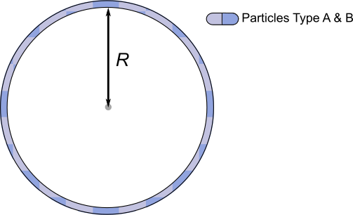

dd_spheresurf¶
-
deerlab.dd_models.dd_spheresurf(*args)[source]¶ Particles distributed on a sphere’s surface
If called without arguments, returns an
infodictionary of model parameters and boundaries:info = dd_spheresurf()
Otherwise the function returns to calculated distance distribution:
P = dd_spheresurf(r,param)
- Parameters
- rarray_like
TDistance axis, in nanoseconds.
- paramarray_like
List of model parameter values.
- Returns
- infodict
Dictionary containing the built-in information of the model:
info['Parameters']- string list of parameter namesinfo['Units']- string list of metric units of parametersinfo['Start']- list of values used as start values during optimizationinfo['Lower']- list of values used as lower bounds during optimizationinfo['Upper']- list of values used as upper bounds during optimization
- Pndarray
Distance distribution.
Model¶
Variable |
Symbol |
Default |
Lower |
Upper |
Description |
|---|---|---|---|---|---|
|
|
2.5 |
0.1 |
20 |
Sphere radius |

{kind=link}
Example using default parameters:

References¶
[1] D.R. Kattnig, D. Hinderberger, Journal of Magnetic Resonance, 230 (2013), 50-63. DOI: 10.1016/j.jmr.2013.01.007